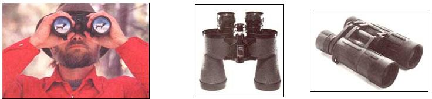
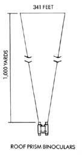
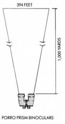
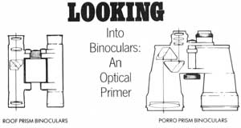
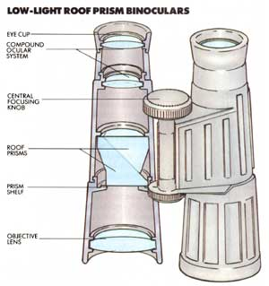
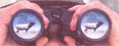

A nature-watcher's guide to low-light binoculars
IT'S AT LEAST A THOUSAND yards across the river valley to the grassy little park where I watch our local elk feed most every June evening. Tonight they emerge from the quaking aspens and scrub oak at exactly 7:30, following the lengthening tree-shadows out into the little clearing.
By 8:40, it has grown too dark to continue watching the animals through my little 7X2 minibinoculars. In fact, I can no longer see well enough through them even to focus. I put the minis aside and take up a newer, larger pair, size 7X50.
Optical magic.
Not only are the elk once again visible, but with the help of the big 7X50s, I can now make out subtle differences in size and coloration between individual animals and observe exactly what each is doing: A lone cow is lying near the bottom edge of the park chewing cud. A few yards above her, next to a clump of scrub oak, lies a second, somewhat larger cow, this one with a very small calf relaxing nearby. At the very back of the clearing, two pony-sized yearlings are playing tag in and out of the "quakies." A sixth animal is feeding in the deep shadows
With these magical binoculars, a full half-hour passes before I again lose clear sight of the little herd. That's half an hour of primetime nature observation I would not, could not, have enjoyed without them.
Since wildlife is most active (and thus most visible) at dawn and dusk, serious watchers need binoculars with the ability to magnify not just images but ambient light as wellfield optics that will provide rewarding viewing not just in good light but also in the deep forest shadows of midday and at the dim edges of early morning and late evening. Unfortunately, the minibinoculars so popular today, even the very best of them, actually reduce the amount of light reaching your eyes, while most popular-sized binoculars enhance image brightness only very slightly, if at all.
Over the past several months I've had the opportunity to use and compare low-light binoculars from two reputable manufacturers-Bushnell (a division of Bausch & Lomb) and Ranging (a Coleman company). While several other manufacturers offer binoculars in low-light configurations, by focusing on the dissimilar features and capabilities of the Bushnell and Ranging products with which I am familiar, I hope to present a good cross-sectional view of the features and capabilities of all low-light optics.
Bushnell's low-lights come in three basic grade-models: Ensigns, retailing for a suggested $81.95; Sportviews, at $115.95; and the fog-proof and waterproof Banner Marines, at $349.95. (The differences are due to ascending quality.) All three are full-sized binoculars available in the slightly unusual 7X50 size-which is, by and large, the optimum low-light configuration. (For reasons explained in the accompanying sidebar, 7X50s are not available in mini or compact versions.) I used all three models for quite some time and came out favoring the Sportviews, which weigh 26 ounces and offer a field of view of 394 feet at 1,000 yards. [Editor's Note. Bushnell recently announced their new Spectator line, to include a 7X50 "InstaFocus" at $142.95 and a 7X50 "Center Focus" at $327.95.]
Ranging's Dawn and Dusk binoculars, weighing 16 ounces, are available only in a modest 5X32 size, are protected by the camopattern rubber "armour" so popular in sports optics today, and retail for a suggested $140. (A note on manufacturer's suggested retail prices in general: If you can't beat them, you're not shopping very astutely.) In size and weight, the Ranging binoculars are considerably smaller than full-sized glasses, but larger than minis.
No matter the size or manufacturer, when you start researching low-light opticsbinoculars, spotting scopes or rifle scopesyou'll soon run up against the term relative brightness. In brief, relative brightness is a numerical rating that indicates the amount of light transmitted to the eyes through a set of clear lenses and prisms. All else being equal, the greater (higher) the relative brightness of a pair of binoculars, the better they'll allow you to see in low-light conditions. Trouble is, these days, all else rarely is equal.
Still, in order to fully understand the workings of low-light optics, it's essential to understand the concept of relative brightness. And to do that, we need first to become familiar with a few other terms and concepts used to describe the capabilities of field optics. These are magnification, objective lens diameter, field of view and exit pupil.
TO ACHIEVE MAGNIFICATION, BINOCULARS employ convex lenses both fore (objective) and aft (ocular). Since convex lenses flip an image upside down as it passes through, internal prisms are used to bend the light and to erect, or right, the picture. Binocular prisms are arranged in one of two configurations: porro or roof.
The Bushnell 7X50s discussed in the accompanying article, as well as most other full-sized (and some smaller) binoculars, employ the porro prism system, wherein the two prism lenses contained in each barrel are slightly offset one from the other-either vertically, horizontally or both. This results in the familiar binocular style in which the larger objective lenses are set either wider or higher than the smaller ocular lenses,
Conversely, most small binoculars achieve their compactness by employing the roof prism system, wherein all lenses and prisms are mounted in-line.
Unfortunately, miniaturization and full-power magnification (7X and larger) are mutually exclusive features in low-light binoculars. This is because low-light optics achieve the majority of their enhanced brightness by using large objective lenses. Since the roof prism design doesn't allow sufficient room between barrels to accommodate big lenses, most low-light binoculars use the porro prism design. While an enhanced low-light capability can be achieved in an intermediate size, such as Ranging's 5X32s, neither magnification nor relative brightness is maximized.
THE TERM "MAGNIFICATION," COMMONLY referred to as "power," is self-explanatory. Most binoculars range in power from 6X to 10X, with 7X being the standard.
Why, then, has Ranging produced a product with a magnification, at 5X, below the normal scale?
A couple of reasons.
As you know if you've ever tried following a bird in flight or a bounding deer with a pair of, say, I OX glasses, you can't. The higher the magnification, the more difficult it is to hold the binoculars steady and the jumpier the image will appear. Even 7X glasses can be a challenge to hold firmly on a moving object, or, for that matter, on a stationary object if you lack steady hands and a firm stance.
Thus, part of the reason Ranging offers its low-light glasses in such a modest power is to allow them to be hand held and panned without delivering a jittery image. Since they're not intended for long-distance viewing across vast open spaces, but for midrange and close-in work in thick cover, the low magnification doesn't detract all that much. Additionally, the physics of producing lowlight binoculars in a compact size places limits on magnification. Greater magnification means greater physical size, while smaller size means decreased power; it's an unavoidable tradeoff.
Objective lens diameter is always listed in millimeters. (The objective lenses are the larger ones at the front, while the ocular lenses are the smaller ones closest to your eyes.) The greater the objective lens diameter, the broader will be the field of view at a given distance and, because bigger lenses admit more light, the brighter the image delivered to your eyes. Magnification and objective lens diameter are listed together, separated by an X, providing a convenient cc size," or overall capabilities, rating. For Ranging's Dawn and Dusk glasses, it's 5X32; for Bushnell and other brands of full-power low-lights, it's 7X50.
Field of view refers to the size of the area of vision a particular pair of binoculars provides at 1,000 yards. For the Ranging glasses, it's 341 feet; for the Bushnell Sportviews, it's 394 feet.
Exit pupil is the diameter, in millimeters, of the circle of light exiting from an ocular (eye-end) lens. By squaring the exit pupil, we arrive at relative brightness, as rated on a scale that peaks out at 49. (Forty-nine represents the maximum amount of light a healthy human eye is capable of absorbing when fully dilated.)
While the exit pupil is listed on the bodies or packaging of some binoculars, it isn't on others. No matter, you can easily calculate it yourself: Just divide the magnification power into the objective lens diameter. For my little 7X25 minis, the exit pupil is 3.57 (25 divided by 7); for standard 7X35s, it's 5; for Ranging's 5X32s, 6.4; and for the big 7X50s, 7.1.
Now, to determine relative brightness, simply square the exit pupil. Thus, 3.57 X 3.57 = 12.74 for the 7X25s; 25 is the relative brightness for the 7X35s; 40.96 for the Ranging 5X32s; and 50.41 for 7X50s. (These figures, remember, are on a scale that tops at 49.) From this we can see that while the 7X25 minis transmit only about a quarter of the light healthy eyes can normally admit in low-light conditions, and standard 7X35s about half, the Ranging 5X32s deliver better than 80%, and the 7X50s are so bright as to be completely off the scale.
In the old days, that's really all you needed to know about choosing low-light binoculars: Buy those having the highest relative brightness rating.
These days, however, there's an important additional consideration, a consideration unrelated to power, objective lens diameter or exit pupil. This wild-card factor is lens coating. Any lens or prism will absorb and retain a portion of the light passing through it, rendering the viewed image somewhat dimmer than it would appear to the naked eye. On the average, uncorrected absorption can account for a 4 to 5% loss for each optical surface through which light must passthat's 8 to 10% per lens. Lens coating can reduce, but can never actually eliminate, light absorption.
In addition to absorption, all lenses and prisms lose to reflection a small portion of the light passing through them. Unlike absorption, most potential reflection loss can indeed be avoided through the application of quality lens coating.
The optics of most modern binoculars are coated with a vaporized metallic salt called magnesium fluoride. This coating not only decreases light reflection considerably (and absorption somewhat) but cuts glare and heightens contrast as well. In binoculars of so-so quality, only the outer surfaces of the objective and ocular lenses are coated, while in good binoculars, all lens and prism surfaces, exterior and interior, get the treatment. (The standard phrase for this is "fully coated optics.")
While a magnesium fluoride coating can reduce light lost to reflection to around 1.5% per lens surface, there's an alternative treatment that can do even better. It's called multi-layer coating. This procedure, if done properly, can reduce reflection loss to around 0.2% per lens surface. Trouble is, only a few of the most expensive optics use the multilayer coating system. And worse, some unscrupulous manufacturers and distributors have been known to claim multi-layer coating when, in fact, they've simply gobbed on an extra thick treatment of magnesium fluoride.
The solution? Unless you're wise to the ways of optics manufacture and advertising, I'd suggest sticking to reliable brand-name binoculars advertising "fully coated optics." That way, at least you'll know you're getting what you paid for.
AS A GENERAL RULE OF THUMB, WE can say that when shopping for low-light binoculars, the informed consumer should demand a product having fully coated optics and a high relative brightness (that is, you'll recall, low magnification power relative to objective lens diameter). While you may not find what you're looking for on the shelves of your local camera shop or sporting-goods store, you should be able to special order what you want (as opposed to what an overzealous salesperson may want you to want) at no additional cost.
Before deciding on a particular size, style and brand of low-light binoculars, ask yourself these questions: Where will I most often be using my new binoculars-in the open, or in the forest? What will I most often be viewing-moving or stationary objects? Will I be hiking considerable distances with my binoculars, or be involved in any other activity where weight and bulk become important considerations-or will I be viewing primarily from a fixed location near home, camp or vehicle?
For my money: When backpacking and bow hunting in the rugged forests surrounding my Rocky Mountain home, I'll continue to carry my little 7X25 minis, while wishing I owned a pair of Ranging 5X32 compacts; for hiking and hunting, I simply have too much other essential gear to tote and too far to travel over difficult terrain to allow the luxury of lugging along full-sized binoculars. But for prolonged bouts of edge-of-day wildlife watching involving little or no walking, I'll opt for my 7X50s every time.
One final observation: Being far from wealthy and a cheapskate to boot, I went into this study figuring to buy the more economical Bushnell Ensigns. After all, the relative brightness of all 7X50s, no matter brand or grade, is the same. But, darn it, the Sportviews' image proved so much crisper and brighter that I wound up popping the few extra bucks for them instead. (The top-of-the-line Banner Marines were out of the running, not only due to their cost but also because of the clunky necessity of focusing each barrel individually.)
Intrigued by this discovery, I took the experiment a step further by borrowing a friend's German-made 7X50s (price: $700+). What I found was, yes, they were some brighter than the Sportviews, though not, by my lights, enough so to justify a six-fold increase in price.
This correlation between image quality, image brightness and price among same-size binoculars with similarly coated lenses must be chalked up to that slippery term "quality." When talking field optics, quality is a blend of two primary ingredients: the clarity of the glass used and the degree of polish the lens surfaces receive.
Most "American-made" binoculars use optics imported from Japan. And while the Japanese have quality standards for the optical products they export, they tend to be somewhat less than uniformly rigid. Therefore, the more-reliable American companies, such as Bushnell, test the optical quality of each of their imported lenses and prisms against a "master glass." The manufacturers of lower-priced brands often do no testing at all and thereby lay themselves open to getting the culls-those lenses that meet Japanese export requirements but aren't up to the higher standards of the more particular American manufacturers.
The moral: When buying binoculars, lowlight or otherwise, stick to brand names, and buy the best you can afford. Your eyes will thank you.
|
 Most binoculars are either roof prism (right) or porro prism (left) |
 You'll find extra hours in your nature-watching day with the right optics. |
 The accompanying illustrations depict the field of view of each the binoculars described in this article |
|
 Compact 5x32 binoculars trade some relative brightness for convenience. |
 |
 |